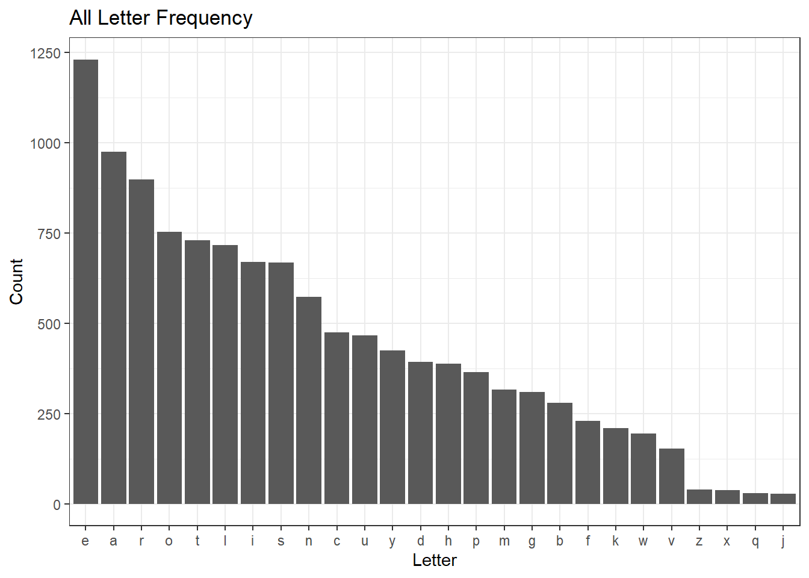
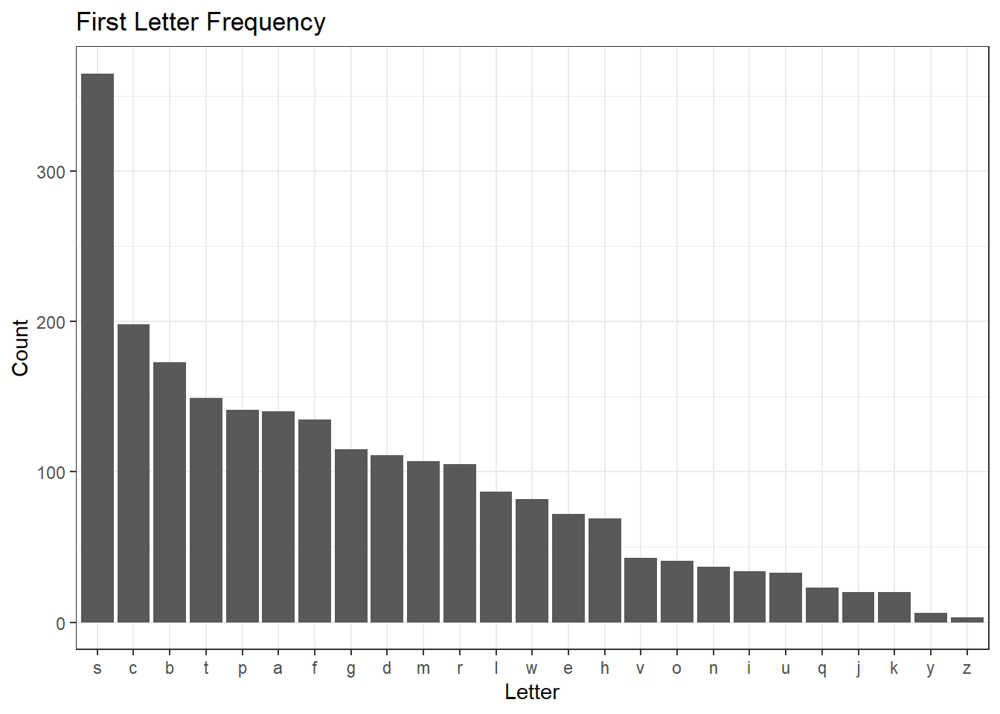
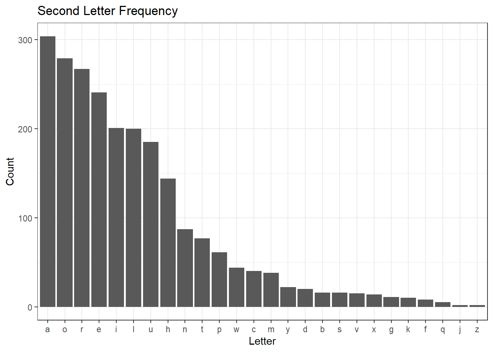
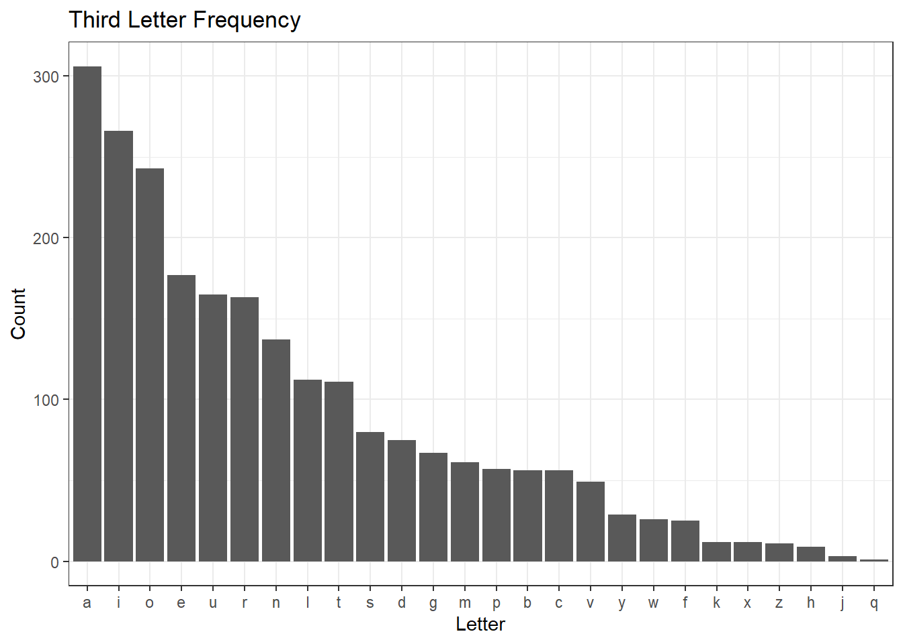
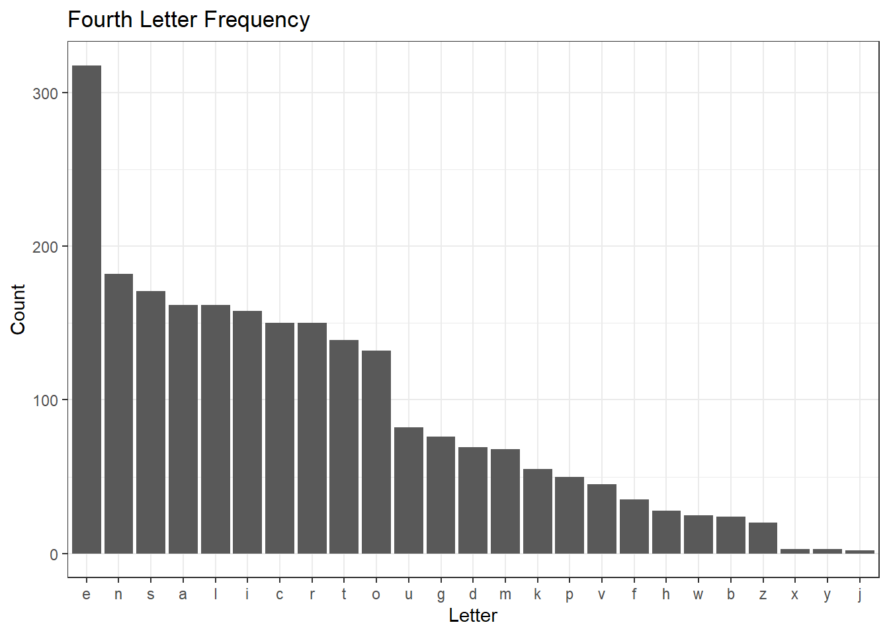
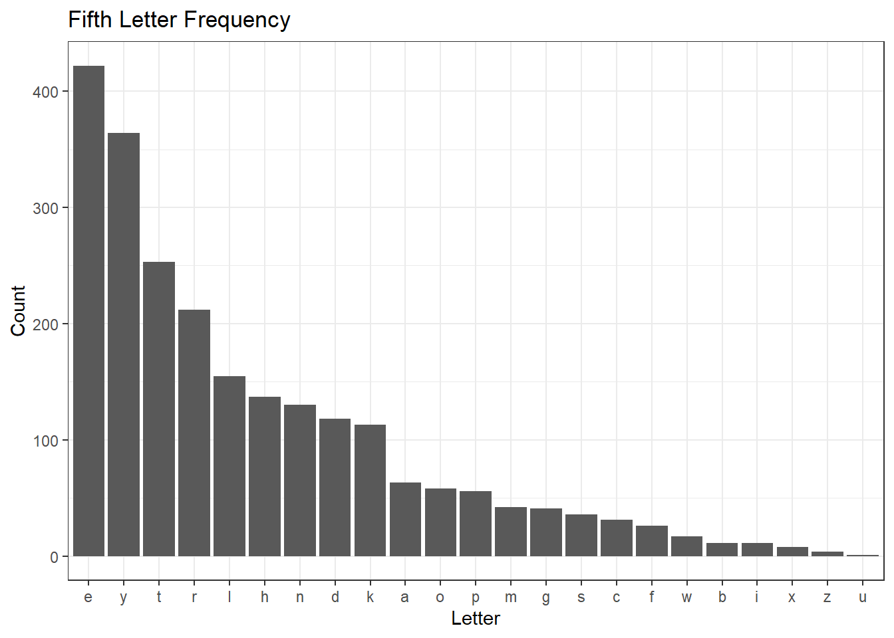
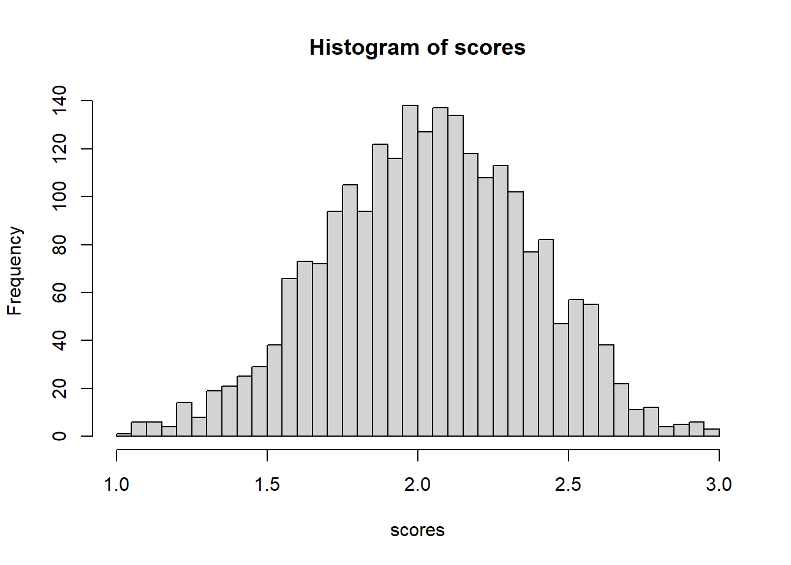

library(tidyverse)
library(httr)
# this doesn't work any more!!
#
# wordle <-
# GET("https://www.nytimes.com/games/wordle/main.18637ca1.js") %>%
# content(as = "text", encoding = "UTF-8")
wordle <- readRDS("wordle.Rdata")Wordle
R
A method to find the best Wordle starting word.
I was scrolling through the RStudio blog page, and a post by Arthur Holtz caught my attention. He wrote some code to identify what the optimal starting word is for Wordle. After some initial success with parsing the JavaScript code that contains the possible solution words, he ran into some difficulty when working out the logic for implementing a scoring system to rank the words. I’ve never played Wordle, but I thought what he was trying to do sounded interesting, so I decided to give it a go. The first few code chunks are either identical to or only slightly modified Arthur’s code to retrieve and parse the JavaScript file, so all credit goes to him.
Note
Retrieving the JavaScript file at the link below no longer works, but I’m including it for reference. Fortunately, I saved the file so here I simply read it back in.
Gather the Data
This retrieved the JavaScript for the game is a really long string. Here are the first 100 characters.
substr(wordle, 1, 100)[1] "c(\"cigar\", \"rebut\", \"sissy\", \"humph\", \"awake\", \"blush\", \"focal\", \"evade\", \"naval\", \"serve\", \"heath\","Arthur discovered that the solutions are buried in the JavaScript in a list named Ma. The first word in the list is “cigar” and the last word is “shave”, so we can get the entire list of words by grabbing those words and everything in between.
# the first word of the possible solutions follows Ma=
# the character "c" is at the start index, r at the end index
str_locate(wordle, "cigar") start end
[1,] 4 8str_locate() if from the stringr package, and it returns the indices of the first and last letters in “cigar”. Note that it returns a matrix.
# it's a matrix, not a tibble
class(str_locate(wordle, "cigar"))[1] "matrix" "array" Similarly, we get the indices for the last word.
# the last word
str_locate(wordle, "shave") start end
[1,] 20817 20821This is where I start to deviate from Arthur’s code. I end up with the same data he did, just in a slightly different format. This grabs all of the text, parses the words, and puts them in a tibble with one column called words.
# put the words in a tibble column
ma <-
tibble(
words = substr(
wordle,
str_locate(wordle, "cigar")[, 1],
str_locate(wordle, "shave")[, 2]) %>%
str_remove_all("\"") %>%
str_remove_all("\\s+") %>%
str_split(",") %>%
unlist()
)
head(ma)Next, like in Arthur’s post, I create a tibble where each word is further parse into letters with one column per letter.
# parse words to letters
df <-
str_split_fixed(ma$words, "", n=5) %>%
as_tibble(.name_repair = "minimal") %>%
set_names(c("one", "two", "three", "four", "five"))
head(df)Visualize the Data
These plots are also in Arthur’s post, and I’m including them here because they give some insight into the characteristics of the solution words. First, a plot of the frequencies for all letters.
# plot freq of all letters
df %>% pivot_longer(everything()) %>%
ggplot() +
geom_bar(aes(x = forcats::fct_infreq(value))) +
theme_bw() +
labs(title = "All Letter Frequency",
x = "Letter",
y = "Count")
Then plots of letters by position. First the starting letter. Note that “s” is by far the most common, so we might expect the best starting word to also start with “s”.
ggplot(df) +
geom_bar(aes(x = forcats::fct_infreq(one))) +
theme_bw() +
labs(title = "First Letter Frequency",
x = "Letter",
y = "Count")
The second letter is heavier on vowels, which makes sense.
ggplot(df) +
geom_bar(aes(x = forcats::fct_infreq(two))) +
theme_bw() +
labs(title = "Second Letter Frequency",
x = "Letter",
y = "Count")
The third letter is even more vowel heavy.
ggplot(df) +
geom_bar(aes(x = forcats::fct_infreq(three))) +
theme_bw() +
labs(title = "Third Letter Frequency",
x = "Letter",
y = "Count")
A lot of “e”’s for the fourth letter.
ggplot(df) +
geom_bar(aes(x = forcats::fct_infreq(four))) +
theme_bw() +
labs(title = "Fourth Letter Frequency",
x = "Letter",
y = "Count")
And “e” and “y” for the last letter. Note that there aren’t many “s”’s, as Arthur pointed out. Apparently, they got rid of the plural form of four letter words. I also noticed they got rid of four letter words that you could add “r” or “d” to make a five letter word. For example “rate” to “rater” or “rated”.
ggplot(df) +
geom_bar(aes(x = forcats::fct_infreq(five))) +
theme_bw() +
labs(title = "Fifth Letter Frequency",
x = "Letter",
y = "Count")
ma %>% filter(words == "rater")ma %>% filter(words == "rated")Scoring Words
As I mentioned earlier, implementing a scoring system is where Arthur got stuck. My first attempt was a brute force approach where, one at a time, I compare one word in the list to all others. Matching letters get three points, and correct letters in the wrong position get one point. Since there are 2309 words in the list, that means there are 2309 * 2309 = 5,331,481 comparisons. Even with some parallelization using the furrr package, this script took more than 20 minutes on my laptop. For that reason, I’m not going to execute the code in this post, but it’s below for reference. Using this code, the optimal starting word is “slate”.
library(progress)
library(furrr)
plan(multisession, workers = 6)
pb <- progress_bar$new(total = 2309)
mean_score <- rep(0, nrow(df))
for (j in 1:nrow(df)){
scores <- rep(0, nrow(df))
base <- as.vector(t(df[j, ]))
mean_score[j] <-
1:nrow(df) %>%
future_map(function (i){
tgt <- df[i, ]
score <- sum((base == tgt) * 3)
score + sum(tgt[base != tgt] %in% base[base != tgt])}
) %>% unlist() %>% mean()
pb$tick()
}
ma %>% slice(which.max(mean_score))Although brute force gives an answer, I could speed things up by vectorizing to work with all words simultaneously. I think this approach works for all cases except when there are two letters in the initial guess word (what I call tgt below) and the same two letters in the answer word that aren’t in the same location. For example, given a tgt of “erase” and answer word of “steed”, the “e”’s get a score of 1, not 2 like they should. I believe this is ok for a start word because my assumption is that a good start word should have all unique letters so that you get feedback on all five letters.
I start with the first word in the list, “cigar”, and parse it into a vector of five letters called tgt. I then extract the unique letters from that vector, pad it with “#” so that it has a length of 5, and call it utgt for later use.
Then I create a tibble df to implement the scoring. The first five mutate functions do some bookkeeping that I found helpful to visualize what was going on as I iterated on this solution. I also use the two columns they create as the basis for calculating the tgt word score for each of the other words in the list. There’s one mutate for each letter. In each case, if the letters match, I put the letter in the match column. If they don’t match, I check to see if it’s a correct letter in the wrong position, and if so, put it in the notmatch column.
The last mutate implements the scoring. The lines with c1 through c5 score the notmatch column. These are the cases when the correct letter is in the wrong position, and they get a score of 1, all other cases get a 0. The line with score uses the match column to give a score of 3 for the cases where the correct letter is in the correct location. The scores of 3’s and 1’s then get added together to give a score for each word. Before I iterate over all of the tgt words, I’ll show what the df tibble looks like for “cigar”, the first tgt word.
tgt <- as.vector(t(df[1, ])) # get the target word
utgt <- unique(tgt) # get the unique letters
if (length(unique(tgt)) < 5){
utgt <- c(utgt, rep("#", length(tgt) - length(utgt)))} # add padding
df %>%
mutate(
match = ifelse(tgt[1] == one, one, "_"),
notmatch = ifelse(tgt[1] != one & one %in% tgt, one, "_")) %>%
mutate(
match = paste0(match, ifelse(tgt[2] == two, two, "_")),
notmatch = paste0(notmatch, ifelse(tgt[2] != two & two %in% tgt, two, "_"))) %>%
mutate(
match = paste0(match, ifelse(tgt[3] == three, three, "_")),
notmatch = paste0(notmatch, ifelse(tgt[3] != three & three %in% tgt, three, "_"))) %>%
mutate(
match = paste0(match, ifelse(tgt[4] == four, four, "_")),
notmatch = paste0(notmatch, ifelse(tgt[4] != four & four %in% tgt, four, "_"))) %>%
mutate(
match = paste0(match, ifelse(tgt[5] == five, five, "_")),
notmatch = paste0(notmatch, ifelse(tgt[5] != five & five %in% tgt, five, "_"))) %>%
mutate(c1 = ifelse(!is.na(str_match(notmatch, utgt[1])), 1, 0),
c2 = ifelse(!is.na(str_match(notmatch, utgt[2])), 1, 0),
c3 = ifelse(!is.na(str_match(notmatch, utgt[3])), 1, 0),
c4 = ifelse(!is.na(str_match(notmatch, utgt[4])), 1, 0),
c5 = ifelse(!is.na(str_match(notmatch, utgt[5])), 1, 0),
score = str_count(match, "[:alpha:]") * 3 + c1 + c2 + c3 + c4 + c5) %>%
head()I’ll use future_map() from the furrr package to iterate over all 2,309 starting words in parallel. Note that after creating the df tibble shown above, I calculate the mean of the score column and record that in the scores list. Once that completes, I display the top ten scoring starting words.
library(furrr) # since I didn't run the code above, load package
plan(multisession, workers = 4)
scores <-
1:nrow(df) %>%
future_map(function(x){
tgt <- as.vector(t(df[x, ])) # get the target word
utgt <- unique(tgt) # get the unique letters
if (length(unique(tgt)) < 5){
utgt <- c(utgt, rep("#", length(tgt) - length(utgt)))} # add padding
df %>%
mutate(
match = ifelse(tgt[1] == one, one, "_"),
notmatch = ifelse(tgt[1] != one & one %in% tgt, one, "_")) %>%
mutate(
match = paste0(match,
ifelse(tgt[2] == two, two, "_")),
notmatch = paste0(notmatch,
ifelse(tgt[2] != two & two %in% tgt, two, "_"))) %>%
mutate(
match = paste0(match,
ifelse(tgt[3] == three, three, "_")),
notmatch = paste0(notmatch,
ifelse(tgt[3] != three & three %in% tgt, three, "_"))) %>%
mutate(
match = paste0(match,
ifelse(tgt[4] == four, four, "_")),
notmatch = paste0(notmatch,
ifelse(tgt[4] != four & four %in% tgt, four, "_"))) %>%
mutate(
match = paste0(match,
ifelse(tgt[5] == five, five, "_")),
notmatch = paste0(notmatch,
ifelse(tgt[5] != five & five %in% tgt, five, "_"))) %>%
mutate(c1 = ifelse(!is.na(str_match(notmatch, utgt[1])), 1, 0),
c2 = ifelse(!is.na(str_match(notmatch, utgt[2])), 1, 0),
c3 = ifelse(!is.na(str_match(notmatch, utgt[3])), 1, 0),
c4 = ifelse(!is.na(str_match(notmatch, utgt[4])), 1, 0),
c5 = ifelse(!is.na(str_match(notmatch, utgt[5])), 1, 0),
score = str_count(match, "[:alpha:]") * 3 + c1 + c2 + c3 + c4 + c5) %>%
summarise(mean_score = mean(score)) %>% unlist()
}
) %>% unlist()
ma %>%
mutate(score = scores) %>%
arrange(desc(scores)) %>%
head(10)Here we see “slate” is on top, followed by two other words that start with “s”. All but one of the words end in “e”. I didn’t include it here, but I tried a different scoring system with correct matches given a 5 instead of a 3, and I got the same top 3 words. We could also try giving more points to correct letters in the wrong position and other variations.
Lastly, I was curious about the distribution of scores and so plotted a histogram. I didn’t have an expectation of a shape, but I think it’s interesting that it’s normal looking.
hist(scores, breaks=30)